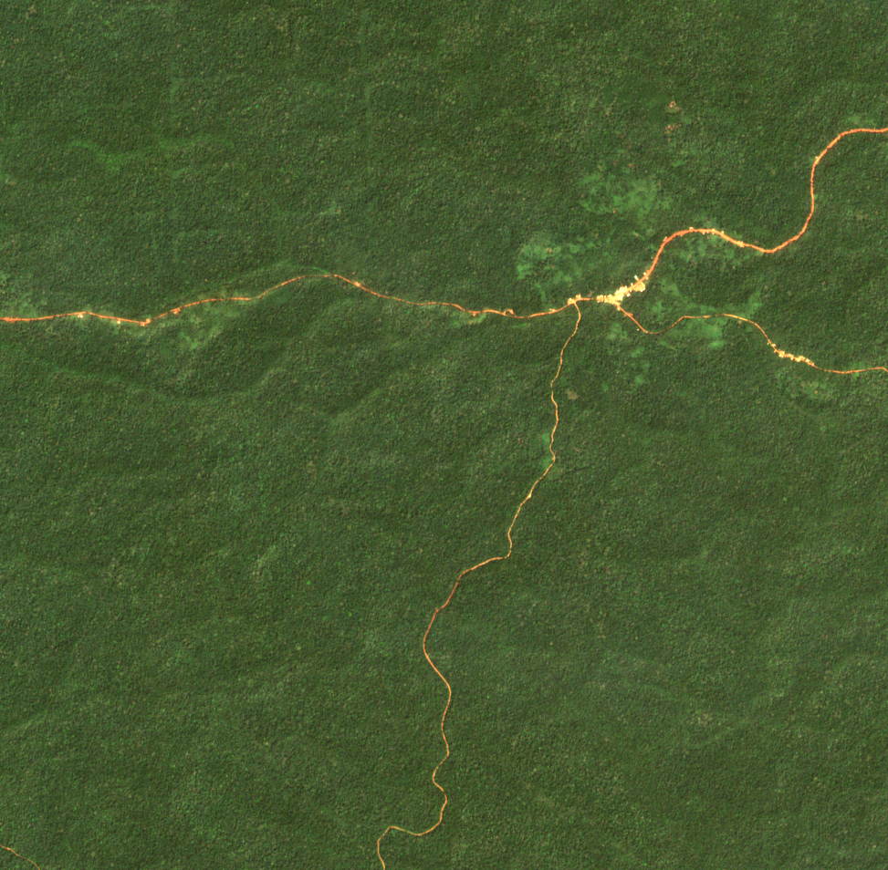

vignettes/biodivMapR_01.Rmd
biodivMapR_01.RmdbiodivMapR aims at producing spectral diversity maps
based on multidimensional raster data. While its application is
technically not limited to optical imagery, users experimenting with
other types of remote sensing data are expected to make sure that the
input information used to produce remotely sensed diversity maps are
actually relevant to describe vegetation biodiversity as intended in
biodivMapR.
biodivMapR requires raster data as input. Raster data
are handled with the R package terra.
Data format should then be compliant with the drivers available with
this package.
If using multispectral/hyperspectral optical data, the central wavelength should be properly identified for each spectral band provided. Central wavelength is required for the computation of spectral indices or the application of continuum removal.
The S2 subset used for this tutorial corresponds to a forested area in Cameroon. We previously identified a S2 acquisition with minimum cloud cover. Visualization can be done with the Copenicus Browser
Once a correct acquisition identified, Sentinel-2 imagery is obtained
with the R package preprocS2.
The chunk of code below downloads Sentinel-2 products corresponding to a bounding box from the STAC catalog provided by Microsoft Planetary Computer.
Refl_L2A is the L-2A reflectance for the bounding
boxprovider_mask is the corresponding SCL (scene
classification layer)Binary_mask is a binary vegetation mask extracted from
the SCLvegetation_mask is an updated binary vegetation mask
after application of NDVI and radiometric thresholds to remove
non-vegetated, shaded and hazy pixels (very basic filtering)Additionally, The rasters corresponding to the geometry of
acquisition can be downloaded from the CDSE, if valid
authentication is provided and geomAcq = T.
Authentication for CDSE should be obtained by activating an OAuth
clients ID, following this link.
Please make sure you copy the password related to your OAuth clients ID
as you will not be able to access it once you close the page.
# load useful libraries
library(preprocS2)
library(sf)
################################################################################
# 1- define input & output directories
output_dir_s2 <- './S2_image'
datetime <- '2018-12-25'
site_name <- 'S2_subset_Cameroon'
bbox <- sf::st_bbox(obj = c('xmin' = 357001, 'ymin' = 341701,
'xmax' = 366730, 'ymax' = 351236))
sf::st_crs(x = bbox) <- 32633
# 2- get S2 acquisition for study area
options <- set_options_preprocS2(fun = 'get_s2_raster')
options$geom_acq <- TRUE
options$overwrite <- FALSE
list_files <- preprocS2::get_s2_raster(bbox = bbox, geomAcq = T,
datetime = datetime,
output_dir = output_dir_s2,
site_name = site_name,
options = options)
# Sentinel-2 L2A reflectance
Refl_L2A <- list_files$Refl_L2A
# Sentinel-2 binary mask identifying vegetation, discarding clouds & shadows
vegetation_mask <- list_files$vegetation_mask
# Sentinel-2 mask from provider ( = SCL from ESA products)
SCL <- list_files$provider_mask
# Sentinel-2 geometry of acquisition (if requested from CDSE)
geometryAcquisition <- list_files$geometryAcquisition

Once the image is downloaded, it can be processed with
biodivMapR.
A set of vector files is downloaded here, corresponding to circular plots identified in the raster. It will be used in the final step of the tutorial (Validation with ground information.).
The following code allows downloading the zip file containing the vector data, and unzipping it in the same directory as the one including the raster data.
library(zip)
# name zip file including plots located on the tile
output_dir_val <- file.path(output_dir_s2, 'GroundData')
dir.create(path = output_dir_val, showWarnings = F, recursive = T)
destzip <- file.path(output_dir_val,'S2A_T33NUD_Plots.zip')
# url for the zip file
url <- 'https://gitlab.com/jbferet/myshareddata/-/raw/master/biodivMapR_S2_Sample/VECTOR/S2A_T33NUD_Plots.zip'
download.file(url = url, destfile = destzip)
destunz <- file.path(output_dir_s2,'S2A_T33NUD_Plots')
unzip(zipfile = destzip, exdir = destunz)
unlink(x = destzip, recursive = T)Now that the necessary data is downloaded, we can start the tutorial.